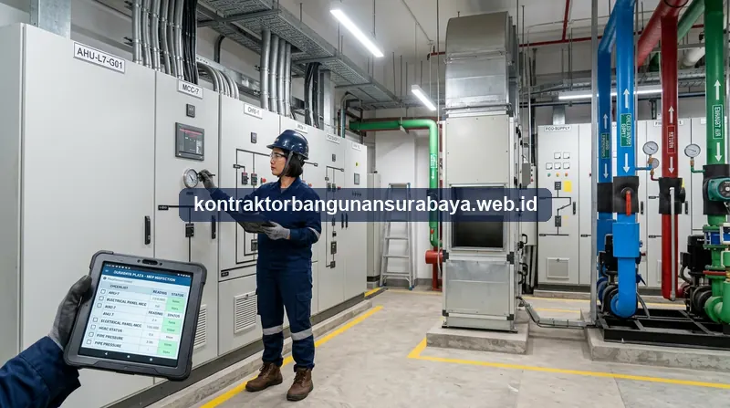

1. Bagaimana Panduan Lengkap Jadwal dan Ruang Lingkup Maintenance Bangunan?
Jadwal dan ruang lingkup maintenance bangunan idealnya mencakup pemeriksaan harian, mingguan, hingga tahunan untuk elemen struktural, mekanikal-elektrikal, dan estetika bangunan, agar kerusakan kecil dapat terdeteksi sebelum berkembang menjadi masalah besar. Panduan dari kontraktorbangunansurabaya.web.id ini merangkum ruang lingkup pemeliharaan terpadu yang umum diterapkan pada proyek konstruksi ruko komersial maupun gedung komersial di Surabaya.
Dalam pengelolaan aset properti di kawasan perkotaan, program jasa maintenance bangunan yang terarah memegang peranan krusial dalam menjaga nilai investasi, kenyamanan operasional penghuni, serta keandalan fungsi proteksi keselamatan gedung dari paparan cuaca ekstrem tropis.
Pentingnya Maintenance Terpadu di Surabaya
Tingkat kelembapan tinggi, curah hujan lebat, dan suhu terik di Surabaya menuntut perlindungan berkala pada seluruh komponen fisik gedung agar terhindar dari pelapukan dini, korosi baja, dan kebocoran dak beton.
2. Checklist Pemeliharaan Harian dan Mingguan Bangunan Komersial
Pemeriksaan harian biasanya mencakup hal-hal sederhana namun penting, seperti memastikan tidak ada genangan air di area lobi atau parkiran, memeriksa fungsi lampu penerangan, serta memastikan pintu darurat dan jalur evakuasi tidak terhalang barang pada gedung kantor dan ruko aktif.
Pemeriksaan mingguan dapat mencakup pengecekan fungsi AC, pompa air, dan panel listrik utama, untuk memastikan seluruh sistem utilitas bangunan berjalan normal sebelum ditemukan gangguan yang lebih serius pada minggu-minggu berikutnya.
Checklist Harian (Daily Inspection)
- Area Lobi & Parkir: Memastikan bebas genangan air dan kotoran
- Penerangan: Menguji fungsi lampu utama, tangga & lampu darurat
- Jalur Evakuasi: Memastikan pintu darurat tidak terkunci & bebas rintangan
- Aroma & Kebisingan: Mendeteksi bau gosong atau dengungan mesin abnormal
Checklist Mingguan (Weekly Inspection)
- Sistem AC & HVAC: Uji suhu hembusan & kebersihan saluran pembuangan
- Pompa Air Bersih & Kotor: Pemeriksaan tekanan & fungsi pelampung otomatis
- Panel Listrik Utama: Pengecekan MCB, indikator tegangan & kebersihan boks
- Toilet & Sanitasi: Pengecekan kebocoran kran, seal pipa, dan ketersediaan air
Dokumentasi hasil pemeriksaan harian dan mingguan dalam bentuk checklist tertulis juga membantu pengelola gedung melacak pola kerusakan berulang pada titik tertentu, sehingga penanganan dapat difokuskan pada akar masalah, bukan sekadar mengatasi gejala yang muncul di permukaan.
Penunjukan penanggung jawab harian untuk mengisi checklist ini juga penting, agar tanggung jawab pemeriksaan tidak tumpang tindih antar staf, sekaligus memudahkan penelusuran apabila ditemukan kelalaian pada satu periode pemeriksaan tertentu.
Standar Operasional Berkelanjutan
Formulir inspeksi yang terisi rapi menjadi data historis berharga untuk audit keselamatan berkala dan mempermudah perpanjangan sertifikat kelaikan fungsi bangunan (SLF) di wilayah Surabaya.
3. Perawatan Berkala Elemen Struktural dan Sistem MEP Gedung
Perawatan berkala pada elemen struktural, seperti pengecekan retak dinding, kondisi cat pelapis anti air pada dak beton sebagaimana diulas dalam panduan renovasi struktur ruko dan gedung, dan kondisi sambungan struktur baja jika ada, sebaiknya dilakukan minimal setiap enam bulan hingga satu tahun sekali, tergantung usia dan kondisi bangunan.

| Kategori Pemeliharaan | Item yang Diperiksa | Interval Ideal | Tujuan Utama |
|---|---|---|---|
| Struktural & Dak Beton | Retak rambut/struktur, waterproofing dak, sambungan baja WF | 6 - 12 Bulan | Mencegah rembesan air hujan & korosi tulangan |
| Sistem Tata Udara (HVAC) | Filter udara, kumparan kondensor, level freon, motor kipas | 1 - 3 Bulan | Menjaga efisiensi energi & kualitas udara sejuk |
| Sistem Proteksi Kebakaran | Tekanan pipa hidran, sprinkle, kondisi APAR, pompa jockey | 1 - 3 Bulan | Kesiapan respon darurat kebakaran 100% aktif |
| Kelistrikan & Genset | Pemanasan genset, aki starter, kebersihan panel MCCB & grounding | Mingguan / Bulanan | Mencegah korsleting listrik & back-up daya instan |
Sistem mekanikal, elektrikal, dan plumbing (MEP) juga membutuhkan perawatan preventif secara berkala, misalnya pembersihan filter AC, pengecekan tekanan air pada sistem hidran kebakaran, dan pengujian genset cadangan, agar seluruh sistem tetap berfungsi optimal saat dibutuhkan dalam kondisi darurat.
Pencatatan riwayat perawatan setiap unit peralatan, misalnya kapan terakhir kali AC diservis atau genset diuji, juga membantu memprediksi kapan komponen tertentu perlu diganti sebelum benar-benar rusak total, sehingga penggantian dapat direncanakan sebagai biaya terjadwal, bukan biaya darurat mendadak.
4. Jadwal Maintenance Terstruktur di Surabaya
Maintenance yang terjadwal dengan baik membantu pemilik bangunan menghindari biaya perbaikan besar akibat kerusakan yang dibiarkan terlalu lama, karena penanganan dini pada kerusakan kecil umumnya jauh lebih murah dibanding perbaikan menyeluruh setelah kerusakan meluas.
Keuntungan Maintenance Terstruktur:
- Efisiensi Anggaran Jangka Panjang: Biaya perbaikan terencana mengeliminasi pengeluaran darurat tak terduga.
- Laporan Berkala Tertulis: Dokumentasi kondisi fisik sebagai bukti pemeliharaan aset bernilai tinggi.
- Tim Teknisi Berpengalaman: Penanganan ditangani oleh tenaga sipil dan MEP bersertifikasi.
- Pelatihan Internal Staf: Pembekalan prosedur darurat pemutusan arus dan katup pipa air.
kontraktorbangunansurabaya.web.id membantu menyusun jadwal maintenance yang disesuaikan dengan karakteristik dan usia bangunan, mulai dari pemeriksaan rutin hingga penanganan perbaikan skala kecil, sehingga pemilik ruko atau gedung dapat fokus menjalankan usaha tanpa perlu mengurus detail teknis pemeliharaan bangunan sendiri.
Laporan bulanan hasil maintenance juga diberikan kepada pemilik bangunan, sehingga ada catatan tertulis mengenai kondisi bangunan dari waktu ke waktu, yang dapat berguna sebagai referensi apabila suatu saat bangunan hendak dijual atau disewakan kepada pihak lain.
Pelatihan singkat kepada staf internal gedung mengenai penanganan darurat sederhana, seperti mematikan aliran listrik saat terjadi korsleting atau menutup saluran air utama saat terjadi kebocoran besar, juga membantu meminimalkan kerusakan lebih lanjut sebelum tim maintenance profesional tiba di lokasi.
Proteksi Waterproofing Sebelum Musim Hujan
Salah satu bagian penting dari maintenance bangunan adalah perlindungan terhadap kebocoran atap. Pelajari lebih lanjut mengenai jasa waterproofing atap bangunan melalui penerapan sistem waterproofing yang tepat sebelum musim hujan tiba di Surabaya.
5. FAQ Seputar Maintenance & Perawatan Bangunan di Surabaya
6. Konsultasi Gratis Sekarang
Ingin berdiskusi lebih lanjut mengenai kebutuhan konstruksi dan program pemeliharaan bangunan Anda di Surabaya? Hubungi tim kami melalui WhatsApp untuk konsultasi awal tanpa biaya bersama kontraktorbangunansurabaya.web.id.
Konsultasi WhatsApp di 0889-8964-3555Tim Pemeliharaan Kontraktor Bangunan Surabaya
Divisi Pemeliharaan Sipil, Mekanikal, Elektrikal & Plumbing (MEP). Berfokus pada pemeliharaan preventif berkala gedung komersial, ruko, perkantoran, dan hunian bertingkat di Surabaya dan sekitarnya.